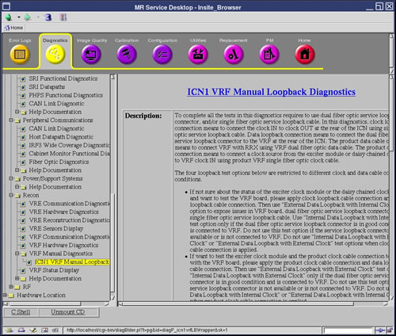

ICN VRF Manual Loopback Diagnostics
1 Diagnostic Link
Diagnostics >> System Function >> Recon >> VRF Manual Diagnostics >> ICN VRF Manual Loopback Diagnostics
Diagnostics >> Hardware Location >> System Cabinet >> Recon >> VRF Manual Diagnostics >> ICN VRF Manual Loopback Diagnostics
Figure 1. ICN VRF Manual Loopback Diagnostics

2 Purpose
The ICN VRF Manual Loopback Diagnostics differentiate VRF failure modes due to the VRF link module, fiber data cable to VRF data input point, VRF clock module, and/or clock cable to VRF clock input port.
3 Components Tested
-
VRF Board
-
VRF Dual Fiber Optic Data Cable
-
VRF Single Fiber Optic Clock Cable
-
Exciter Clock Module
4 Requirements
This diagnostic requires that either the dual fiber optic service loopback connector, the single fiber optic service loopback cable, or both be connected to the VRF. The existing spare single fiber optic service loopback cable can be used to connect the CLK IN to the CLK OUT at the rear of the ICN for the clock loopback cable connection. Data loopback requires special dual fiber optic service loopback connector to replace the product cable, and to connect to the same data fiber connector at the rear of the ICN.
 |
|

 |
|
Required Parts for Loopback Tests:
Service Cable Kit (5306523) includes:
-
Dual Fiber Optic Service Loopback Connector (5306530)
-
Single Fiber Optic Service Loopback Cable (5309512)
Each of the four loopback test require different cable configurations as listed below Figure 2:
-
Internal Data Loopback with External Clock (IDEC) requires use of the dual fiber optic service loopback connector if RRX is not working properly. Otherwise, product configuration is supported.
-
Internal Data Loopback with Internal Clock (IDIC) requires both the single fiber optic service loopback cable and the dual fiber optic service loopback connector.
-
External Data Loopback with External Clock (EDEC) requires the dual fiber optic service loopback connector only.
-
External Data Loopback with Internal Clock (EDIC) requires both the single fiber optic service loopback cable and the dual fiber optic service loopback connector.
Refer to Cable Connection and Disconnection for the proper procedure to connect and disconnect the cables at the rear of the ICN.
5 Block Diagrams
Figure 2. ICN VRF Manual Loopback Data Paths

To better view this diagram, please refer to the high resolution image. 2198709.pdf
6 Test Sequence
6.1 Cable Connection and Disconnection
6.1.1 Disconnect the VRF Single Fiber Optic Clock Cable or Single Fiber Optic Service Loopback Cable
-
Rotate the connector counter-clockwise until you feel a click.
-
Pull back the metallic part till the key disengages and slowly pull out the cable.
6.1.2 Connect the VRF Single Fiber Optic Clock Cable or Single Fiber Optic Service Loopback Cable
-
Insert the protruding white portion of the clock loopback cable into the CLK IN connector socket on the ICN.
-
Turn the entire cable (not just the metallic connector) until the key wedges into the gap on the socket and push the cable inside.
-
Push the metallic part and rotate it clockwise until you fell a click. Gently tug the cable to make sure it is securely fastened.
-
Connect the other end of the clock loopback cable to CLK OUT to the ICN following the same process (see Steps 1 - 3).
6.1.3 Disconnect the VRF Dual Fiber Optic Data Cable or Dual Fiber Optic Service Loopback Connector
-
Press the tab on the bottom side of the cable connector.
-
Pull the connector out of socket on the ICN.
6.1.4 Connect the VRF Dual Fiber Optic Data Cable or Dual Fiber Optic Service Loopback Connector
-
Align the cable connector with the socket on the ICN.
-
Press the tab on the underside and push the connect into the socket.
6.2 Manual Loopback Diagnostic Test Sequence
-
Select Start Loopback Mode.
-
Click Run.
-
Connect the required cables for the selected test Figure 2.
note:If you want to use a non-default value to test, under Options fill in the Iterations field.
-
Select a loopback test which is allowed for the applied cable connections.
-
Click Run.
-
To try a different loopback test, repeat steps 3 - 6.
-
Recover the cable connections to product configuration.
-
Select Stop Loopback Mode.
-
Click Run.
7 Expected Results
These diagnostics have an output displayed in the Test Results area. If the test passes, the stress PASS in blue displays along with the VRF serial number and ICN number. The string FAIL in red displays with the VRF serial number, ICN number, and with details of the failure.